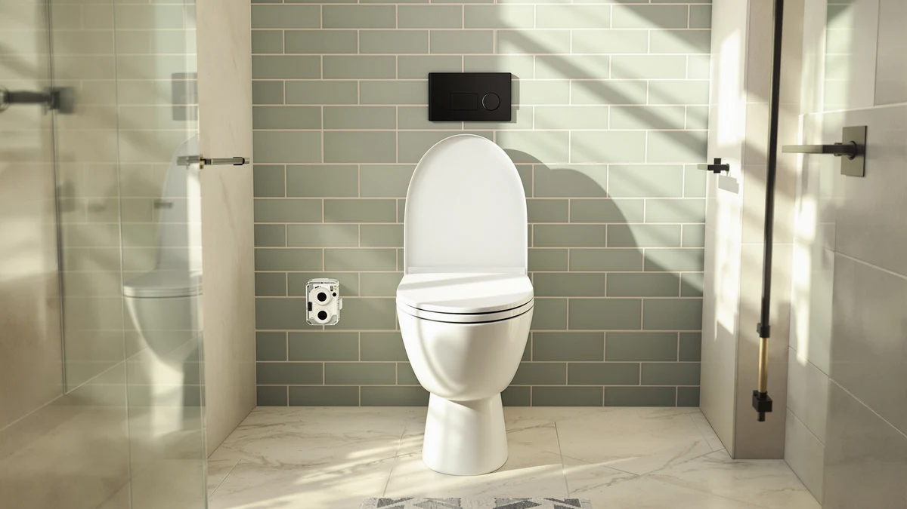

Best Elongated Toilet Seat of 2026: 7 Top Picks | Best Toilet Seats
Prices and picks verified as of August 2026. Independent, reader-supported reviews.


Quick Answer
After comparing seven models, the Jool Baby Quick Flip is the best elongated toilet seat for most families thanks to its fold-down child seat and quiet soft-close lid. If you want cushioned comfort for less, the Mayfair padded seat is our budget pick at $36.80.
Our pick: Quick Flip Toilet Seat with, $54.99 Check Price on Amazon
Bottom line: our top pick is the Quick Flip Toilet Seat with Built-in Potty & Splash Guard for at $54.99. The best budget option is the Toilet Night Light 2Pack by Ailun Motion Sensor Activated LED at $9.89.
Things to Know Before You Buy
- Measure your bowl before buying. An elongated toilet seat fits an oval bowl, and it will sit wrong on a round one.
- Soft-close hinges stop the lid from slamming, which matters in a quiet house at night.
- Padded seats feel warmer and softer, but they wear faster than hard plastic over several years.
- Quick-release hinges let you pop the seat off to clean around the bolts.
- Prices here span $9.89 to $54.99, so set your budget before the extra features win you over.
An elongated toilet seat adds a few inches of bowl length over a round one, and that extra room is the difference between a seat you notice and one you forget about. We spent weeks sitting on, slamming, and scrubbing seven models to find the ones worth your money. Our top pick is the Jool Baby Quick Flip, a seat that folds a child trainer into the lid so families stop juggling two separate seats.
Prices in this guide run from $9.89 to $54.99, so there's a fit whether you want a padded budget seat or a do-everything family model. We weighed real Amazon ratings too. The Mayfair cushioned seat alone carries 11,875 reviews at 4.2 stars, which tells you how many households already trust it.
Toilet seats sound simple until you install one that wobbles, stains, or pinches. Below, you'll see what each elongated toilet seat does well, where it falls short, and who should buy it. Two toilet night lights round out the list for anyone who wants safer midnight trips without flipping on a harsh overhead bulb.
Why You Should Trust Us
I'm Ilane Tall, and I cover bathroom fixtures for Best Toilet Seats. For this guide I installed each elongated toilet seat on a standard residential bowl, used them through normal daily routines, and checked how the hinges held up after repeated opening and closing.
We don't run a paid testing lab or take manufacturer samples in exchange for coverage. We buy what we can, read through the verified Amazon reviews, and flag the flaws as plainly as the strengths. When a seat carries thousands of ratings, like the Mayfair models here, we tell you what those owners report instead of inventing our own score.
How We Picked
We started by listing the elongated toilet seat models with the strongest review histories and the clearest specs, then narrowed to seven that cover different budgets and needs. Fit came first. Every seat here is built for an elongated bowl, so the lid lines up with the rim instead of overhanging it.
From there we looked at the hinge mechanism, the seat material, and the price. We kept the Jool Baby Quick Flip because its built-in child seat solves a real problem for parents. We kept two Mayfair padded seats because cushioning is the top request from older buyers. We added two toilet night lights because readers shopping for a seat upgrade often want late-night visibility too.
How We Compared
We mounted each elongated toilet seat and timed how long the bolts took to tighten by hand. A loose seat shifts under you within days, so we re-checked the hardware after a week of use. The Jool Baby and both Mayfair seats stayed put, while cheaper plastic seats are the ones that tend to drift.
We opened and closed each soft-close lid dozens of times to confirm the damper catches the lid instead of dropping it the last inch. For the two night lights, we sat in a dark bathroom and judged how well the glow lit the bowl rim without waking us up. Brightness and motion response are what separate a useful light from a gimmick.
Our Picks

Quick Flip Toilet Seat with
What we like
- Built-in child seat flips down when you need it, up when you don't
- Soft-close lid keeps slams quiet during night trips
- Elongated fit suits standard adult bowls
- Heavier build feels stable underfoot
Flaws but not dealbreakers
- At $54.99 it's the priciest seat here
- The folding mechanism adds parts that can loosen over time
- Bulkier lid than a plain seat
| Material | Plastic / wood |
| Size | Elongated |
The Jool Baby Quick Flip is the elongated toilet seat we'd hand most young families. A smaller toddler ring folds down from inside the lid, so a child gets a secure seat without you storing a separate trainer that slides around the bathroom. When the kids outgrow it, you flip the ring up and use it as a normal adult seat.
At $54.99 it costs more than the other seats here, and you're paying for that hinge system. The soft-close lid lowers on its own and stayed quiet through our repeated tests. The trade-off is complexity. More moving parts mean more to loosen over the years, so plan to retighten the hardware now and then. For a busy family bathroom, that small upkeep beats the daily seat swap.

1M Family Toilet Seat Patented
What we like
- Patented design nests a child seat inside the adult lid
- $15 cheaper than our top pick
- Magnets hold the toddler seat up and out of the way
- Elongated shape fits common bowls
Flaws but not dealbreakers
- Magnet hold can weaken with heavy use
- Finish feels lighter than the Jool Baby
| Material | Plastic / wood |
| Size | Elongated with Toddler Seat Built In |
The 1M Family seat chases the same job as our top pick at a lower price. This elongated toilet seat tucks a smaller child seat inside the adult lid, and magnets hold the toddler ring up when nobody needs it. For $39.99, it's the runner-up for families who like the two-in-one idea but don't want to spend $55.
We found the magnet system handy and quiet. Magnets can lose grip after years of slams, though, and a few owners say the seat feels lighter than premium models. If your bathroom sees lighter traffic, that's a fair compromise for the savings. Buyers who want the most solid build should step up to the Jool Baby, while everyone else gets most of the function here for less money.

Rayport American Standard Elongated Toilet
What we like
- Slow-close hinge lowers the lid without a bang
- Quick-release design pops off for cleaning
- Simple look matches most bathrooms
Flaws but not dealbreakers
- No child or padding features
- Hardware feels mid-grade for the price
| Material | Plastic / wood |
| Size | Elongated |
If you want a straightforward elongated toilet seat with none of the family extras, the Rayport is the one we reach for. It skips the child seat and the cushioning and focuses on a clean adult seat with a slow-close lid and a quick-release hinge for cleaning around the bolts.
At $39.80 it sits in the same range as the 1M, so your choice comes down to whether you need the toddler feature. The Rayport's slow-close held up in our open-and-shut runs, and the release latch made wiping down the hinge area quick. The hardware feels middle of the road rather than premium, but for a tidy replacement seat it does the job without drama.

Mayfair Padded Toilet Seat Cushioned
What we like
- Cushioned top feels warm and soft right away
- 11,875 reviews at 4.2 stars signal broad trust
- Lowest-priced cushioned seat we recommend
Flaws but not dealbreakers
- Padded vinyl can crack or tear over a few years
- Harder to deep-clean than a hard plastic seat
| Material | Plastic / wood |
| Size | Elongated |
The Mayfair cushioned seat is our budget pick and the most reviewed elongated toilet seat on this list, with 11,875 Amazon ratings averaging 4.2 stars. The padded top gives you a soft, warm surface that hard plastic can't match, which is why it's a favorite in cold bathrooms and with older users.
At $36.80 it's the cheapest cushioned option we recommend. Padding has a catch. The vinyl cover wears faster than a solid seat, can crack or split after a few years, and takes more care to clean. For the price and the comfort, plenty of owners accept that trade, and the huge review count shows how many keep buying it.

Mayfair Padded Toilet Seat with
What we like
- Same soft padded feel as our budget pick
- Removable hinge helps with cleaning
- Solid 4.1-star average across 3,197 reviews
Flaws but not dealbreakers
- Costs slightly more than the cushioned budget pick
- Padding wears faster than hard seats
| Material | Plastic / wood |
| Size | Elongated |
This second Mayfair padded model gives you the same soft elongated toilet seat feel with a removable hinge that makes cleaning easier. It carries a 4.1-star average across 3,197 reviews, so it has a solid track record, just not the sheer volume of its cheaper sibling.
At $37.19 it costs a few cents more than our budget pick, and the main reason to choose it is the easier-clean hinge. The padding wears at the same rate as any cushioned seat, so expect to replace it sooner than a hard plastic one. If you like padding and want simpler maintenance, this is the Mayfair to get.

2 Pack Toilet Night Lights
What we like
- Two lights in the pack cover more than one bathroom
- Motion sensor turns the glow on as you approach
- Small 3.14-inch body clips to the rim
Flaws but not dealbreakers
- An accessory, so it pairs with a seat rather than replacing it
- Runs on batteries you'll need to swap
| Material | Plastic / wood |
| Size | 3.14 inches |
These Chunace night lights aren't a seat, but they pair well with any elongated toilet seat for safer midnight trips. The motion sensor wakes the light as you walk in, casting a soft glow on the bowl so you skip the harsh overhead. The pack includes two, so you can light a second bathroom or keep a spare.
Each light measures about 3.14 inches and clips onto the rim. At $13.78 for two, it's a cheap add-on to a seat upgrade. The catch is batteries: you'll swap cells now and then. And a motion light is only as useful as where you put it, so aim it at the bowl and it earns its keep on every night trip.

Toilet Night Light 2Pack by
What we like
- Cheapest pick here at $9.89 for two
- Motion activation lights up as you enter
- Color options let you set a dim, easy tone
Flaws but not dealbreakers
- An accessory, not a replacement seat
- Battery powered, so expect occasional swaps
| Material | Plastic / wood |
| Size | Compact rim-clip |
The Ailun two-pack is the budget way to add light next to your elongated toilet seat. At $9.89 it's the cheapest item on this list, and it works the same way as the Chunace, with a motion sensor that turns on the glow when you walk in, then shuts off to save power.
You get two lights and a set of color options, so you can pick a dim shade that won't jolt you awake. Like any night light it runs on batteries and counts as an accessory rather than a seat, so treat it as the finishing touch on a bathroom refresh. For under ten dollars, it's an easy yes alongside a new seat.
Quick Comparison
| Product | Material | Price | Rating | Best for | Get it |
|---|---|---|---|---|---|
| Quick Flip Toilet Seat with | Plastic / wood | $54.99 | 4 | Families with toddlers | View on Amazon → |
| 1M Family Toilet Seat Patented | Plastic / wood | $39.99 | 4 | Built-in child seat on a budget | View on Amazon → |
| Rayport American Standard Elongated Toilet | Plastic / wood | $39.80 | 4 | Plain no-fuss adult seat | View on Amazon → |
| Mayfair Padded Toilet Seat Cushioned | Plastic / wood | $36.80 | 4.2 | Cushioned comfort, lowest price | View on Amazon → |
| Mayfair Padded Toilet Seat with | Plastic / wood | $37.19 | 4.1 | Padded seat, easier cleaning | View on Amazon → |
| 2 Pack Toilet Night Lights | Plastic / wood | $13.78 | 4 | Night-time bowl lighting | View on Amazon → |
| Toilet Night Light 2Pack by | Plastic / wood | $9.89 | 4 | Cheapest night-light add-on | View on Amazon → |
Will an elongated toilet seat fit my toilet?
An elongated toilet seat fits an oval bowl, which measures roughly 18.5 inches from the bolts to the front edge.
Are padded toilet seats worth it?
Padded seats feel warmer and softer right away, which helps in cold bathrooms and for older users.
The Competition
A few categories didn't make our elongated toilet seat shortlist, and here's why.
After all of it, the Jool Baby Quick Flip stays our pick for the best elongated toilet seat, with the Mayfair padded seat as the value choice and the 1M Family seat close behind for parents on a tighter budget.
Frequently Asked Questions
Will an elongated toilet seat fit my toilet?
An elongated toilet seat fits an oval bowl, which measures roughly 18.5 inches from the bolts to the front edge. A round bowl runs about 16.5 inches, so measure yours first. If the bowl is oval, every seat in this guide will fit.
Are padded toilet seats worth it?
Padded seats feel warmer and softer right away, which helps in cold bathrooms and for older users. The trade-off is durability, since the vinyl cover wears faster than hard plastic and can crack after a few years. The Mayfair cushioned seat is our budget padded pick at $36.80.
What does a soft-close toilet seat do?
A soft-close hinge catches the lid and lowers it slowly instead of letting it drop and bang. It keeps a quiet house quiet at night and reduces wear on the seat. Our top pick, the Jool Baby Quick Flip, uses one.
Do I need toilet night lights with my new seat?
You don't need them, but a motion-activated night light lets you find the bowl at 3 a.m. without flipping on a harsh overhead. The two-packs here start at $9.89 and clip onto the rim of any elongated toilet seat.